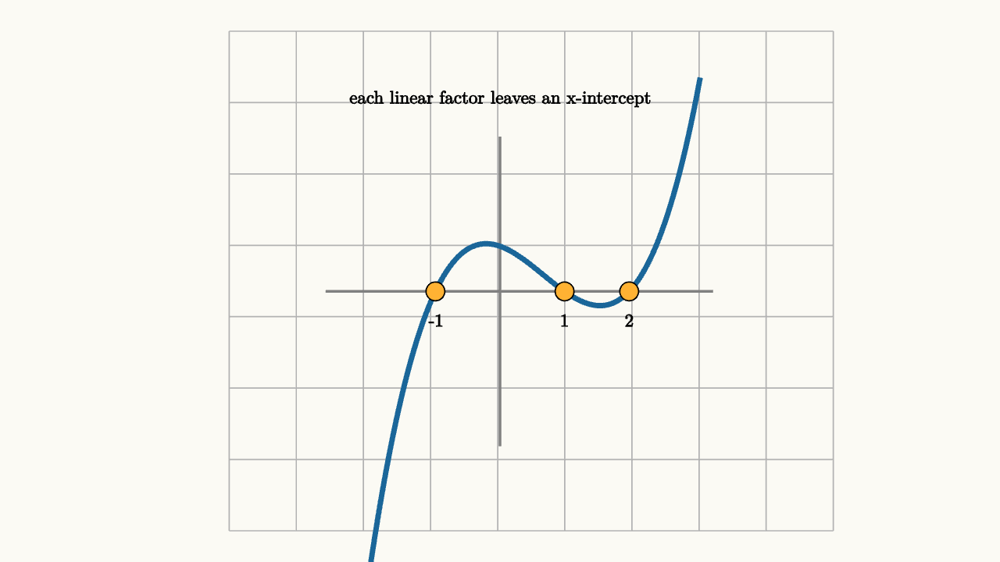

Polynomials Remember Their Roots
A polynomial can look like a pile of powers:
The expanded form is good for evaluating quickly. The factored form tells the story:
Each factor records a root. If $x=2$, the first factor becomes zero, so the whole product becomes zero. If $x=1$ or $x=-1$, the same thing happens. The graph crosses the $x$-axis at the remembered values.

source
background = [0.985, 0.98, 0.955, 1]
camera = Camera(4.8b)
let O = [0, -0.1, 0]
let U = 0.62
let P = |x, y| [O[0] + U * x, O[1] + U * y, 0]
let f = |x| 0.35 * (x + 1) * (x - 1) * (x - 2)
var pts = []
for (x in sample(-2.4, 3.1, 120)) {
pts .= P(x, f(x))
}
mesh diagram = block {
. stroke{LIGHT_GRAY, 1} LineGrid([-2.6, 3.2, 10], [-2.4, 2.4, 8], 1)
. stroke{GRAY, 2} Line(start: P(-2.7, 0), end: P(3.3, 0))
. stroke{GRAY, 2} Line(start: P(0, -2.4), end: P(0, 2.4))
. stroke{BLUE, 4} Polyline(pts)
for (root in [-1, 1, 2]) {
. fill{ORANGE} center{P(root, 0)} Circle(0.09)
. center{P(root, -0.45)} color{BLACK} Text(root, 0.62)
}
. center{[0, 1.75, 0]} color{BLACK} Text("each linear factor leaves an x-intercept", 0.62)
}The factor theorem makes this precise:
This theorem is a memory rule. Once a polynomial has a root $r$, the factor $(x-r)$ stays in its structure. Multiplying all the factors builds a polynomial with those roots.
The theorem is also a practical test. If you suspect $x=2$ is a root of
then evaluate:
Since the value is zero, $(x-2)$ must divide the polynomial. Synthetic division or long division then peels off that factor and leaves the smaller polynomial $x^2-1$. Factoring the smaller piece gives
So one root unlocks the rest of the structure.
Multiplicity tells how strongly the polynomial remembers a root. Compare
with
At $x=1$, the first polynomial crosses the axis because the sign changes from one side to the other. The second touches and turns around because the repeated factor $(x-1)^2$ stays nonnegative on both sides. Odd multiplicity crosses. Even multiplicity touches.
source
param root = -0.6
background = [0.985, 0.98, 0.955, 1]
camera = Camera(4.8b)
let O = [0, -0.25, 0]
let U = 0.62
let P = |x, y| [O[0] + U * x, O[1] + U * y, 0]
let Graph = |root, repeated| {
var pts = []
for (x in sample(-2.7, 2.7, 120)) {
let y = if (repeated) {
0.24 * (x - root) * (x - root) * (x + 1.7)
} else {
0.38 * (x - root) * (x + 1.7)
}
pts .= P(x, clamp(-2.2, y, 2.2))
}
return stroke{if (repeated) { ORANGE } else { BLUE }, 4} Polyline(pts)
}
let Scene = |root, repeated| block {
. stroke{LIGHT_GRAY, 1} LineGrid([-3, 3, 10], [-2, 2, 8], 1)
. stroke{GRAY, 2} Line(start: P(-3, 0), end: P(3, 0))
. stroke{GRAY, 2} Line(start: P(0, -2.2), end: P(0, 2.2))
. Graph(root, repeated)
. fill{if (repeated) { ORANGE } else { BLUE }} center{P(root, 0)} Circle(0.09)
. center{[0, 1.7, 0]} color{BLACK} Text(if (repeated) { "a repeated root makes a touch" } else { "a simple root makes a crossing" }, 0.62)
}
"move a root"
mesh scene = Scene(root: $root, repeated: 0)
play Write(0.8)
"watch the intercept move"
root = 0.9
scene = Scene(root: $root, repeated: 0)
play Lerp(1.2)
"repeat the factor"
scene = Scene(root: $root, repeated: 1)
play Trans(1.0)
"interactive root"
play Wait(4.0)Factoring also helps with signs. Suppose
The roots split the number line into intervals:
On each interval, each factor has a stable sign. Multiplying the signs tells whether the polynomial is above or below the axis. The graph can change sign only when it passes through a root of odd multiplicity.
This explains why polynomials are predictable far away. The leading term controls the ends. For
large positive $x$ makes $2x^5$ dominate, so the right end rises. Large negative $x$ makes $2x^5$ very negative, so the left end falls. The smaller terms shape the middle, but the leading term sets the distant behavior.
Roots, multiplicities, signs, and end behavior are four views of the same object. Expanded form shows coefficients. Factored form shows remembered zeros. The graph turns those memories into crossings and touches. A polynomial is not just a formula to plug into; it is a record of where multiplication by zero can happen.
The same idea explains why complex roots come in pairs for polynomials with real coefficients. If $2+i$ is a root, then $2-i$ is also a root. Their factors multiply to a real quadratic:
The imaginary parts cancel:
So a real polynomial can remember complex roots through quadratic factors that never touch the $x$-axis. The graph hides those roots from the intercept picture, while the algebra still carries them.
Counting multiplicity, a degree $n$ polynomial has $n$ complex roots. This is the fundamental theorem of algebra. Over the real numbers, some of those roots may be hidden inside irreducible quadratics. Over the complex numbers, the polynomial splits completely into linear factors:
That form is the polynomial's memory written out in full.
There is a useful humility in this lesson. Expanded coefficients can hide structure. Factored form can expose roots but make addition harder. A graph can reveal crossings, touches, and end behavior but hide complex roots. Strong polynomial work moves between these views. When you factor, you are asking the polynomial what values it remembers. When you expand, you are asking how those memories combine into coefficients.